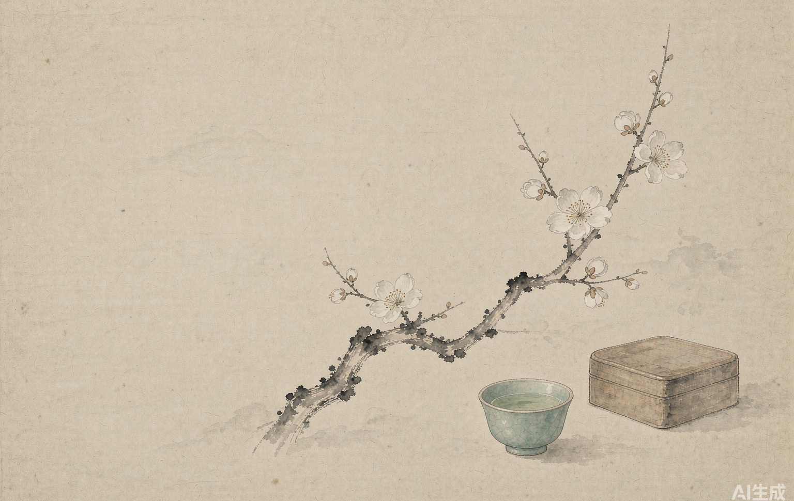
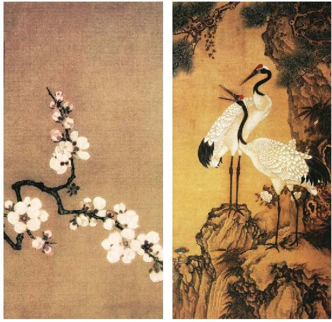
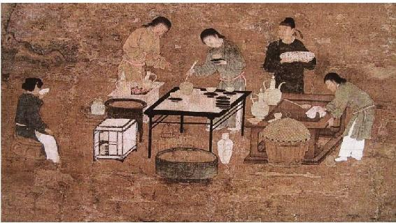
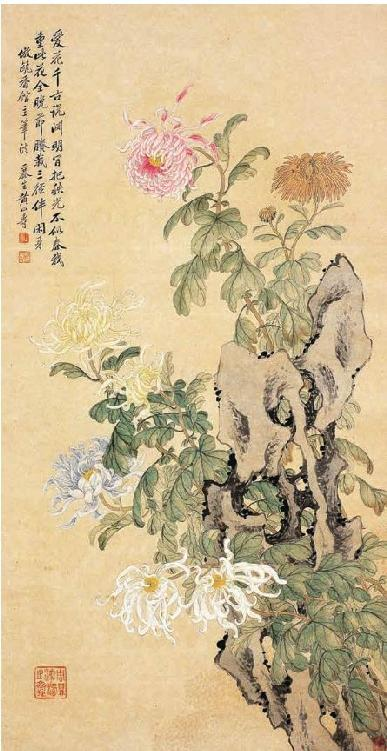
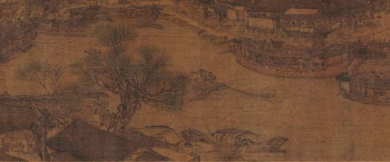

山巅之上 · 日出之时
麒麟
AI 创作者 · 数字园丁
翻旧的书、发亮的屏幕、待办的本子，一并摊在灯下。每一段读进来的心思，先在笔尖活过，再被亲手捏成能跑、能用的东西。
宋韵意境 · 科技表达
以古人之心，创今日之新
以古人之心，创今日之新

麒
向 下 滑 动
AI 创作者 · 数字园丁
翻旧的书、发亮的屏幕、待办的本子，一并摊在灯下。每一段读进来的心思，先在笔尖活过，再被亲手捏成能跑、能用的东西。
在灯下读书、思考、创造的数字园丁

AI 生成 · 宋画山水风格
我是 Kirin（麒麟）。喜欢把翻旧的书、发亮的屏幕和待办的本子一并摊在灯下，让每一段读进来的心思先在笔尖活过。
对 AI 充满好奇——从对话生成到视频创作，从工具效率到艺术表达，我热衷于探索 AI 在生活和创作中的各种可能。
这个小站是我的数字花园，记录探索的轨迹，也分享那些最终被"捏成"了的东西。欢迎你来逛逛。
日常高频使用的 AI 创作伙伴
工作流 AI 助手，处理日常事务，效率拉满。
深度思考型 AI，复杂问题与代码推理的好帮手。
AI 编程与创作好帮手，写代码、做网页一把好手。
国产大模型之光，理解中文、生成内容都很对味。
以宋韵为骨，以科技为笔
AI 生成的创意咖啡短片，一杯桂花拿铁的治愈时光。探索味觉与视觉的碰撞，让咖啡也能有诗意的表达。





正在学习和使用的 AI 相关技能